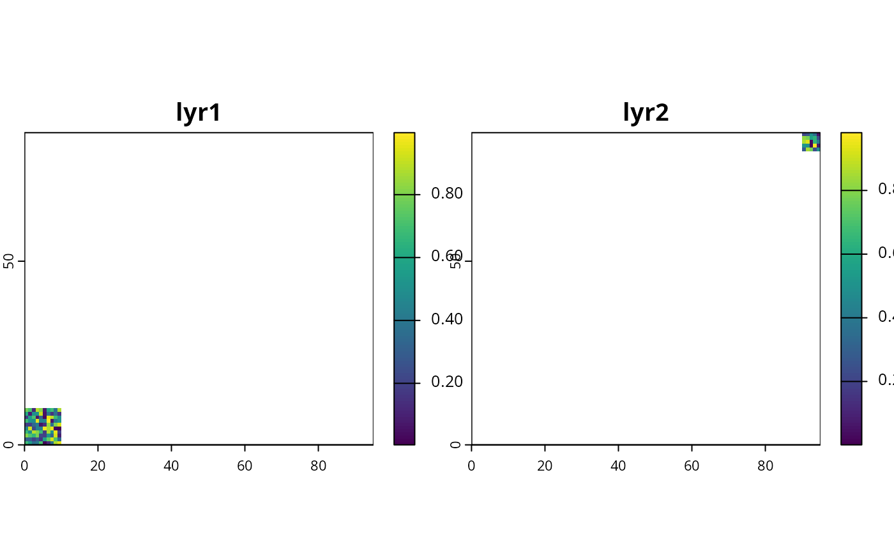

Align and combine a list of multiple terra::rast() objects into a
single terra::rast() object with multiple layers.
Arguments
- x
listofterra::rast()objects.
Value
A terra::rast() object.
Examples
# create a raster
x <- rast(
ncols = 10, nrows = 10,
xmin = 0, xmax = 10, ymin = 0, ymax = 10,
crs = "+proj=lcc +lat_1=48 +lat_2=33 +lon_0=-100 +datum=WGS84"
)
values(x) <- runif(ncell(x))
names(x) <- "lyr1"
print(x)
#> class : SpatRaster
#> size : 10, 10, 1 (nrow, ncol, nlyr)
#> resolution : 1, 1 (x, y)
#> extent : 0, 10, 0, 10 (xmin, xmax, ymin, ymax)
#> coord. ref. : +proj=lcc +lat_0=0 +lon_0=-100 +lat_1=48 +lat_2=33 +x_0=0 +y_0=0 +datum=WGS84 +units=m +no_defs
#> source(s) : memory
#> name : lyr1
#> min value : 0.004362034
#> max value : 0.997118712
# create another raster
y <- rast(
ncols = 5, nrows = 5,
xmin = 90, xmax = 95, ymin = 80, ymax = 85,
crs = "+proj=lcc +lat_1=48 +lat_2=33 +lon_0=-100 +datum=WGS84"
)
values(y) <- runif(ncell(y))
names(y) <- "lyr2"
print(y)
#> class : SpatRaster
#> size : 5, 5, 1 (nrow, ncol, nlyr)
#> resolution : 1, 1 (x, y)
#> extent : 90, 95, 80, 85 (xmin, xmax, ymin, ymax)
#> coord. ref. : +proj=lcc +lat_0=0 +lon_0=-100 +lat_1=48 +lat_2=33 +x_0=0 +y_0=0 +datum=WGS84 +units=m +no_defs
#> source(s) : memory
#> name : lyr2
#> min value : 0.0008969717
#> max value : 0.9815536935
# combine them together
z <- terra_combine(list(x, y))
# plot combined raster
plot(z)
